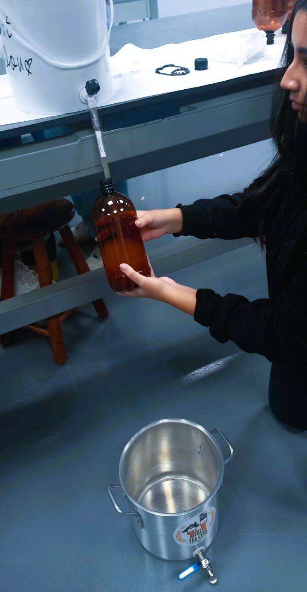
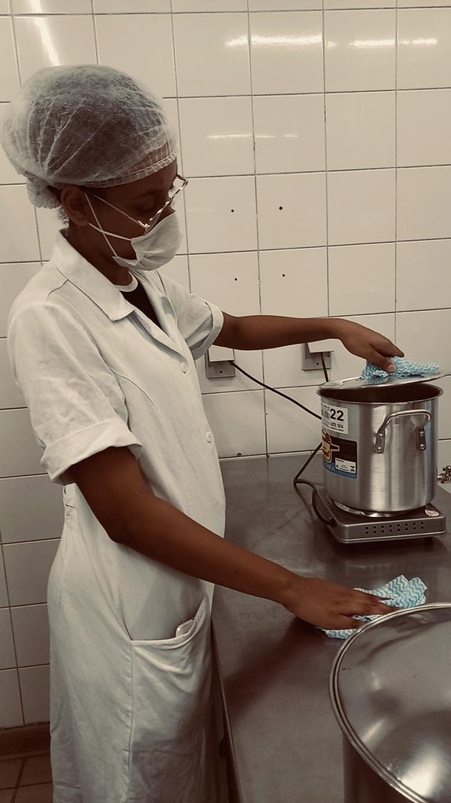
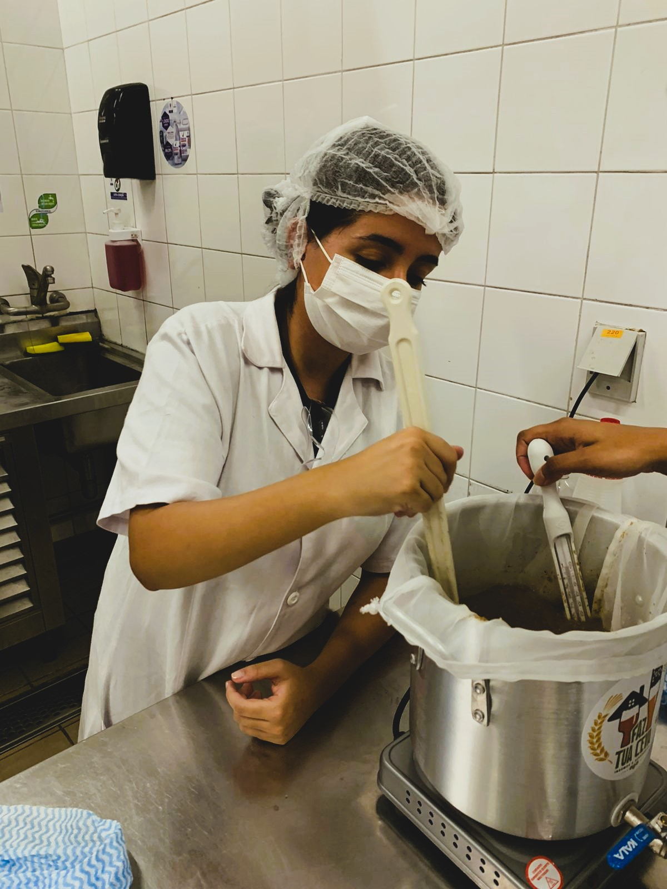
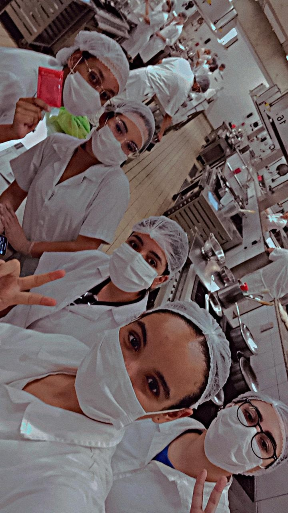
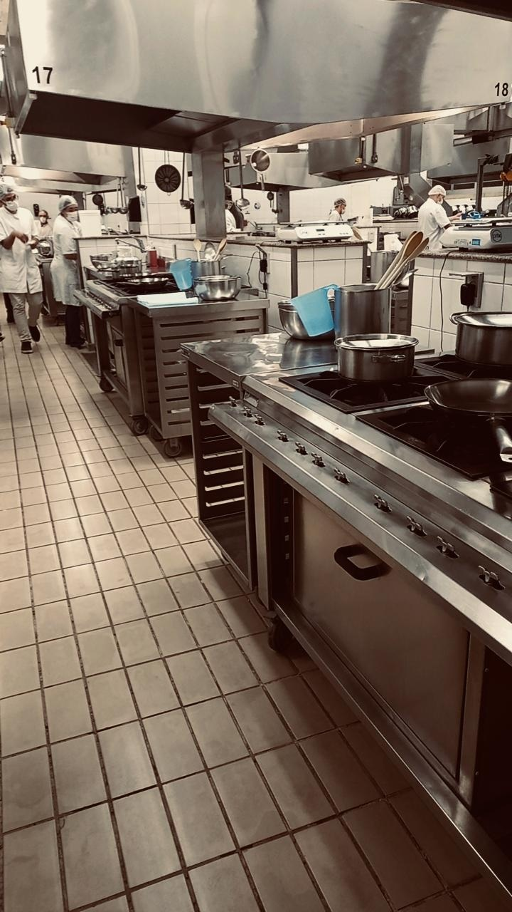
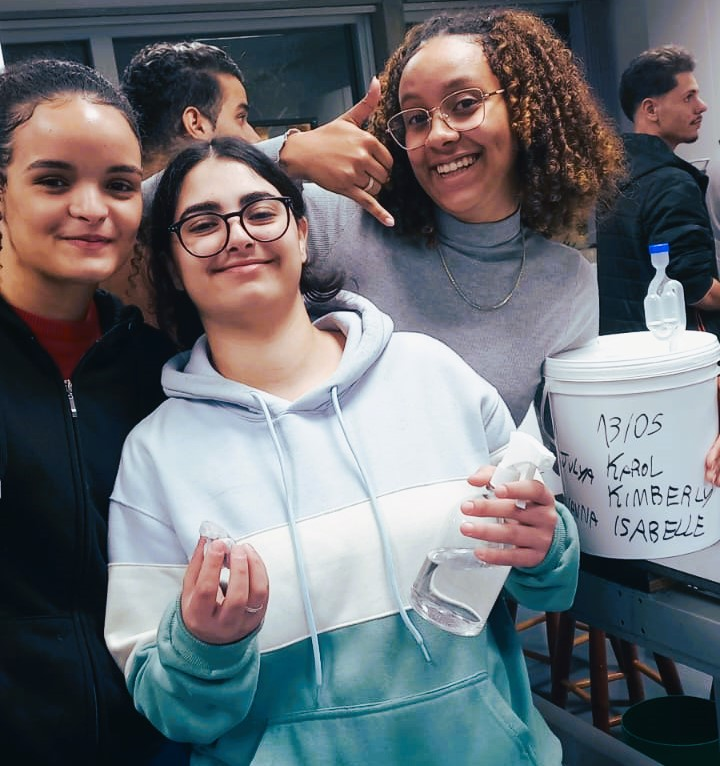
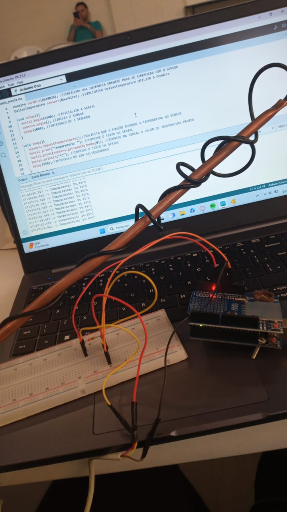
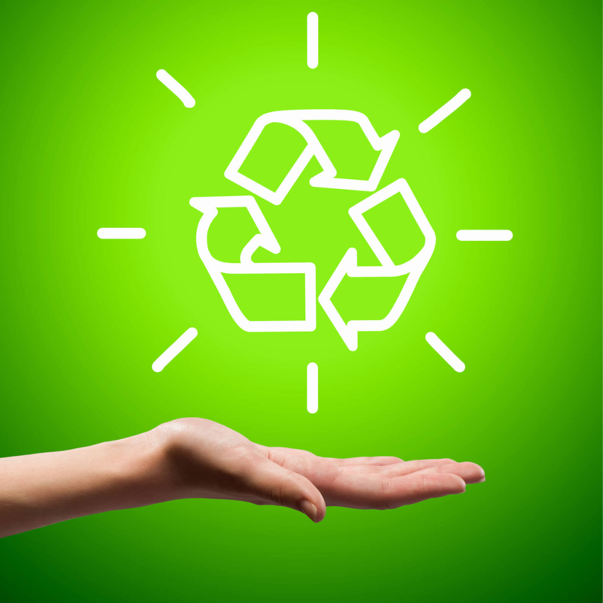
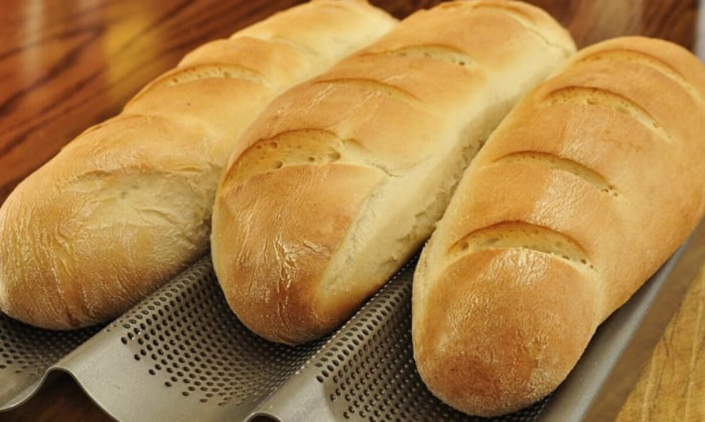
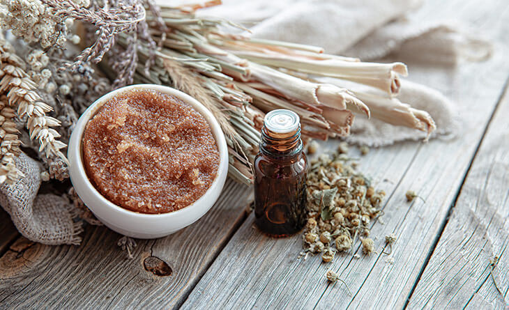

Seja bem-vindo à nossa cervejaria, onde cada gole conta uma história de qualidade, paixão e dedicação. Aqui, estamos comprometidos em produzir cervejas excepcionais, cuidadosamente elaboradas em cada etapa do processo de fabricação.
História da Cerveja com Adjutos
A cerveja de milho no Brasil tem raízes na chegada dos colonizadores portugueses e alemãs, que adaptaram a cerveja tradicional à abundância de milho. Essa versão única logo se tornou uma parte essencial da cultura cervejeira brasileira, amada por seu sabor suave e cremoso. Hoje, é uma bebida celebrada em todo o país, refletindo a paixão dos brasileiros pela boa cerveja e pela inovação culinária.
Processo de Produção
Na nossa cervejaria, cada etapa do processo de fabricação é realizada com extremo cuidado e atenção à higiene. Desde a seleção dos melhores ingredientes até o envase final, garantimos que todos os procedimentos sigam rigorosos padrões de qualidade e segurança.








Iniciativas Sustentáveis
O processo de produção da cerveja, nos deparamos com o mosto, composto por cevada e flocos de milho. Com o objetivo de reduzir qualquer forma de desperdício, decidimos utilizar o mosto como matéria-prima para o desenvolvimento de outros dois produtos, almejando assim fomentar práticas sustentáveis.
A Primeira Proposta consistiu na utilização dos grãos remanescentes no preparo de pão caseiro. Esta estratégia não apenas contribui para a redução do desperdício, mas também melhora a qualidade e o sabor do pão, beneficiando-se da fermentação promovida pelos
grãos.

A Segunda Proposta consistiu na produção de um esfoliante natural, utilizando também o mosto como base. Estes foram misturados com óleos essenciais, resultando em um produto de beleza que não apenas promove a saúde da pele, mas também se alinha aos princípios da sustentabilidade.

No futuro próximo, nossa empresa está planejando lançar no mercado esses dois produtos inovadores que certamente irão cativar os consumidores o esfoliante corporal enriquecido com ingredientes naturais e revitalizantes, e um delicioso pão de cevada, elaborado com os mais finos grãos e cuidadosamente assado para proporcionar uma experiência gastronôncia única e saudável
Compre sua Cerveja
Nome da Cerveja: Pilsen Ale de Maracujá
Estilo: Pilsen Ale de Frutas
Teor Alcoólico: 5% ABV (álcool por volume)
Amargor: Y IBU (unidades de amargor internacional)
Ingredientes Principais: Malte de cevada, flocos de milho (40%), lúpulo, maracujá, levedura.
Descrição:
Ao servir, a Pilsen Ale de Maracujá revela uma tonalidade dourada vívida, brilhante como o sol tropical. Sua espuma é generosa e cremosa, convidando a mergulhar no aroma tropical que flutua sobre ela. O nariz é inundado com notas intensas de maracujá fresco, transportando-o para uma plantação ensolarada onde as frutas são colhidas no auge da maturação.
No primeiro gole, a doçura do maracujá dança em harmonia com a base de malte de cevada e milho, fornecendo uma sensação inicial de frescor frutado, seguida por uma suavidade sutil e cremosa. O milho adiciona uma profundidade ligeiramente adocicada, equilibrada pelo caráter leve e refrescante do lúpulo, que se revela discretamente no final, deixando um suave amargor que convida o próximo gole.
A textura é delicadamente efervescente, com um corpo médio que sustenta os sabores sem ser pesado, tornando-a uma escolha perfeita para acompanhar um dia ensolarado na praia ou uma reunião descontraída com amigos. A cada gole, a cerveja revela camadas adicionais de complexidade, enquanto o sabor vibrante do maracujá continua a brilhar, convidando você a explorar cada nuance desta criação artesanal.
Harmonização de Comida:
Frutos do mar grelhados, como camarões ou peixe branco
Saladas frescas com molhos cítricos
Pratos leves da culinária asiática, como sushi ou curry tailandês
Sobremesas refrescantes, como sorvete de limão ou mousse de maracujá
Preço: R$80,00 por garrafa
Quem Somos
Missão
Nossa missão é criar cervejas artesanais que contém histórias, que despertem sensações e que promovam momentos de prazer e convívio. Valorizamos a qualidade, a originalidade e a paixão pela cerveja em tudo o que fazemos.
Visão
Visualizamos um futuro onde as nossas cervejas artesanais sejam apreciadas em todo o mundo, conectando através através de experiências sensoriais únicas e compartilhadas.
Valores
Agir com honestidade, transparência e ética em todas as interações comerciais, mantendo os mais altos padrões de integridade e responsabilidade.
Integrantes
Giovanna Hototian, 20 anos, desenvolvimento do circuito eletrônico e líder em otimização do uso de recursos financeiros e tesouraria.
Isabelle Reginnette, 18 anos, responsável pelo desenvolvimento do aplicativo de jogo de tabuleiro sobre o processo cervejeiro da marca Petit Loulou, assim como pelo setor de pesquisa.
Julya Dias, 21 anos,
Karolaine Helena, 21 anos, é a responsável pelo desenvolvimento do site da marca Petit Loulou, bem como pelo projeto eletrônico associado.
Kimberly Germano, 19 anos, responsável pelo reaproveitamento sustentável dos resíduos de produção, bem como pelo setor de pesquisa.